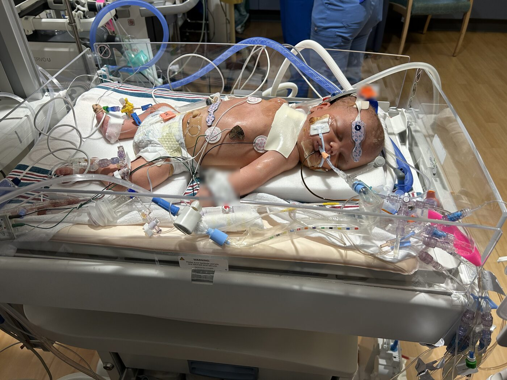
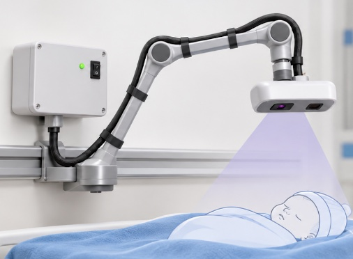

Bobby Bhandari
Embedded systems engineering
bbhand@unc.eduFor the NICU
Technology in development.
While shadowing in a NICU, we met a baby weighing just
0grams
On average, a healthy baby weighs about 3,500 grams at birth, 7× more.
Weeks or months ahead of time.
Weeks in an incubator.
Electrodes on fragile skin.
Breathing data nurses can’t trust.
They deserve better.
Monitoring, reimagined.
We are developing a device that monitors a baby's breathing without touching them. It sits above the bed and watches every breath from a distance.


The people behind MedAxis.
We are biomedical engineering seniors from UNC Chapel Hill and NC State.
Embedded systems engineering
bbhand@unc.edu
Pre-Med · Clinical connections
allem@unc.edu
Data science
alansaj@unc.edu
Data science
jgardesh@ncsu.eduInterested in what we're building? We'd love to hear from you.
Stay tuned.